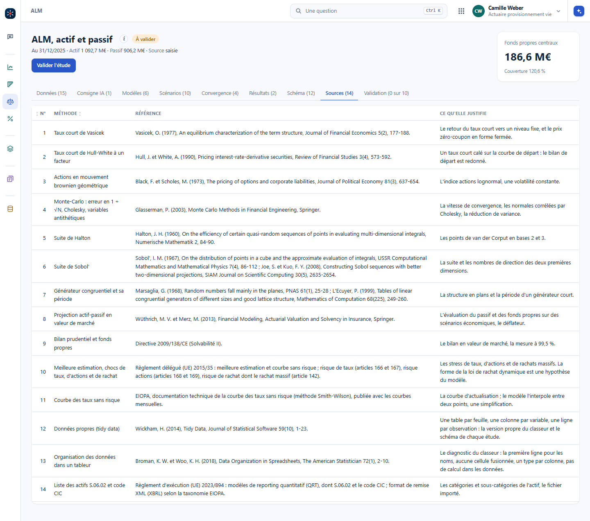

Avant de construire un outil, on regarde ce qui existe. Pour l'ALM, on lit les sites des éditeurs, leurs brochures et leurs publicités, leurs explications, les livres et les mémoires de l'Institut des actuaires. On prend du recul, puis on propose toutes les fonctionnalités et beaucoup d'écrans, pour une vision globale. C'est plus sûr que de chercher soi-même une chose précise, qui laisse de côté ce que le marché fait déjà.
Seulement des sources publiques. Une case ne dit que ce que sa source dit : une fonction absente veut dire « pas trouvée », pas « l'outil ne la fait pas ». Les chiffres de vitesse ou de coût des éditeurs sont de la communication, on ne les reprend pas.
Les données, les hypothèses, les scénarios, la projection, les calculs réglementaires, le contrôle, la restitution.
Ce que l'outil fait, ce qui lui manque, et ce qu'il peut réutiliser.
Une vue d'ensemble, puis un écran par étape, chacun avec ce qu'il réutilise et sa taille.
L'IA lit vite et fait le premier tableau. L'actuaire vérifie chaque case contre sa source, et c'est lui qui juge ce qui compte.
| Étape | Ce que les outils proposent | Exemples d'outils |
|---|---|---|
| Données et import | Actifs ligne à ligne, données des systèmes de gestion vers les modèles avec leur lignage, liste des actifs S.06.02 et XBRL | AXIS, Prophet, Integrate, VEGA |
| Hypothèses | Hypothèses à part du modèle, versionnées, avec droits par rôle ; comportement dynamique des assurés ; produits du marché français | Prophet, RiskAgility FM, SLOPE, addactis Celer |
| Scénarios économiques | Taux, actions, crédit, inflation, change ; univers risque neutre et monde réel ; calibrage sur prix de marché ; tests de martingale et rapports de validation | GEMS, Moody's, Milliman ESG, Numerix, Genesys |
| Projection actif-passif | Interactions actif-passif, actions de gestion, taux servi et participation, rachats dynamiques, allocation par règles | AXIS, MG-ALFA, Prophet ALS, ADVISE, addactis Modeling, ALMSIM |
| Calculs réglementaires | Meilleure estimation, TVOG, SCR, ORSA, IFRS 17, stress inverse | AXIS, RiskIntegrity, VEGA, Agile ALM |
| Stochastique imbriqué | Calculs imbriqués, fonctions proxy, LSMC | AXIS, MG-ALFA, PathWise, R³S |
| Contrôle et gouvernance | Versions des modèles, piste d'audit, tests de non-régression, environnements séparés, assistance IA pour écrire et documenter | Prophet, Integrate, R³S, RiskAgility FM |
| Restitution | Tableaux de bord, analyse des sources de résultat, analyse de mouvement, sensibilités | Integrate, ADVISE, AXIS, RiskIntegrity |
Le relevé complet, outil par outil, avec ses sources numérotées, est tenu à côté de Vision. Une ligne qui n'y cite pas de source n'entre pas dans ce tableau.
Prophet, MoSes, AXIS, MG-ALFA sont nés chez des actuaires, dans des cabinets de conseil ou des éditeurs qu'ils avaient fondés. Les modèles qu'ils portent, les lois, les méthodes de provisionnement, les générateurs de scénarios, sont publics ; ce qui a fait leur valeur, c'est le génie logiciel, un autre métier. D'autres actuaires s'en servent aujourd'hui sans savoir comment le calcul est fait.
L'IA change ce partage. Elle apporte le génie logiciel ; l'actuaire apporte le métier, et devient acteur de son outil. C'est l'occasion d'apprendre, ou de réapprendre, l'actuariat pour de vrai : on pose toutes les questions, on recrée un processus de calcul, et l'on sait ce qu'il y a dedans. On présente souvent l'IA comme une boîte noire ; ici, elle fait le contraire.
Du relevé sort une proposition d'écrans : une rubrique ALM qui s'ouvre sur une vue d'ensemble de l'enchaînement, puis un écran par étape. Le portefeuille (actif, passif, courbe, imports et rapprochements), les hypothèses, les scénarios (calibrage, tests, trajectoires, export), la projection, le bilan économique, les proxys, les exécutions (journal, non-régression, comparaison) et les analyses (mouvement, sensibilités, adossement, distribution). Chaque objet versionné, un jeu d'hypothèses, un jeu de scénarios, un modèle ALM, passe par la même page de modèle : rien ne se réécrit à côté. C'est la vue globale qu'on discute avant d'écrire la première ligne.
C'est une formation : chaque méthode se justifie par une source officielle ou une référence publiée. Dans l'ALM de Vision, comme au taux servi, à la RC professionnelle et au transport, l'onglet Sources donne une ligne par méthode, sa référence, et ce qu'elle justifie ; sous chaque explication, une ligne « Source » renvoie à sa ligne. Une méthode sans source est dite hypothèse de l'écran, comme la forme de la loi de rachat dynamique.

Dans Vision : #/alm?ong=sources. Le même onglet existe au taux servi, à la RC professionnelle et au transport.
Le benchmark ne trouve aucune trace d'une fonction chez un éditeur. Peut-on écrire que son outil ne la fait pas ?
Non. Une case vide veut dire « pas trouvée dans les sources publiques ». La fonction peut exister et ne pas être décrite, ou l'être dans une documentation réservée aux clients. Le tableau le dit en tête, pour que personne ne le lise comme un classement.